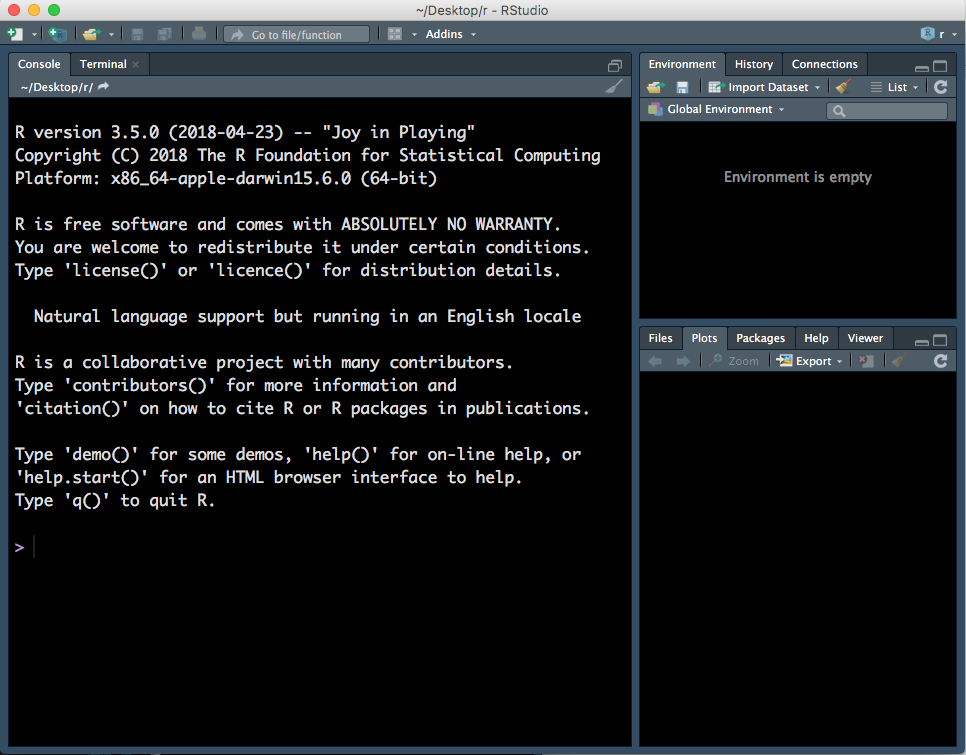
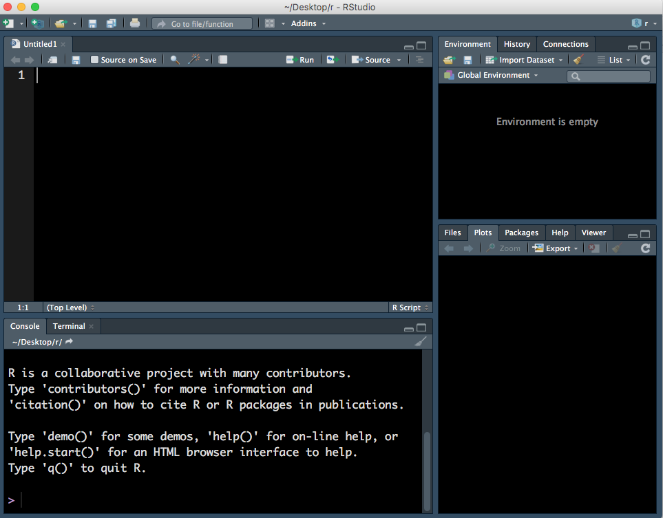
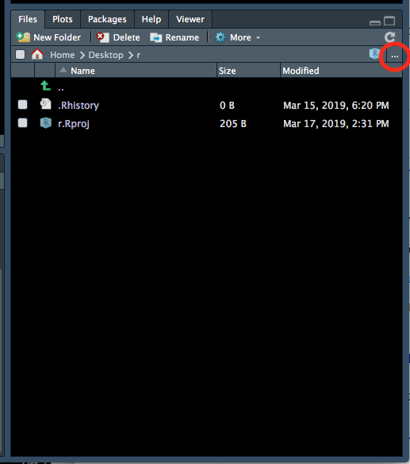
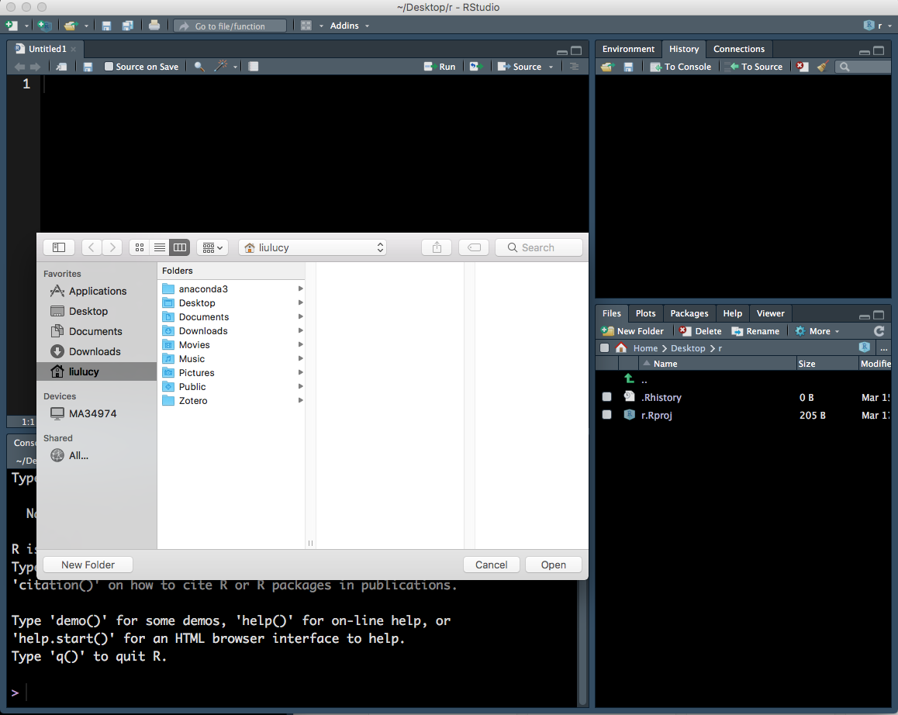
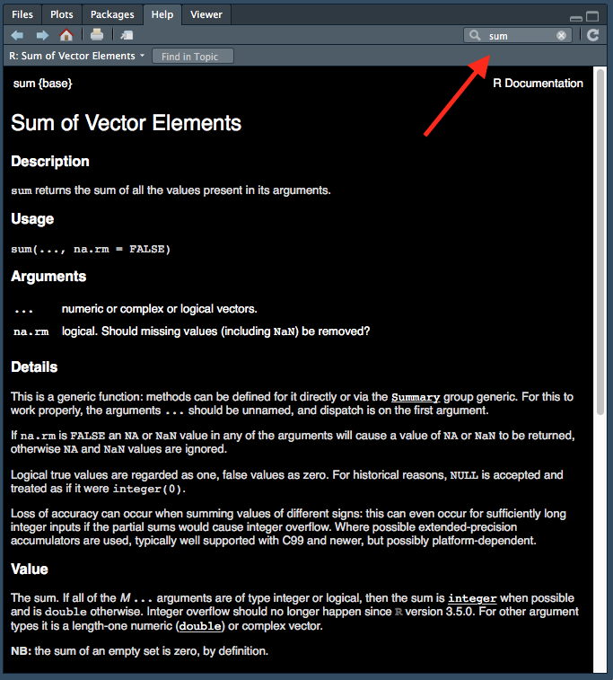
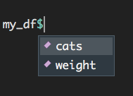
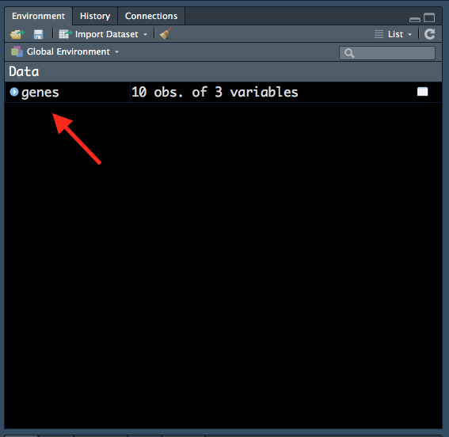

1 Session 1: Introduction to R
Learning Objectives
After today’s session, learners should be able to:
Use RStudio to create an R project and R script
Perform basic mathematical operations, comparisons and function calls in R
Store the results of analysis in variables
Describe the different data types and data structures used in R
Recall how to use RStudio to find data files and read them in as data frames
1.1 What is R?
R is a free and open source statistical programming language, great for performing data analysis. RStudio is a free and open source R integrated development environment (IDE) which makes it easier for you to write code. It does this by providing you with auto-completion (of variable names, function names, file paths etc.), helping with formatting and keeping track of your variables.
You can think of R as the engine in a car and RStudio as the body & controls. R is doing all the calculations/computations but RStudio makes it easier for you to use R.
When you first open RStudio, there will be three panels - see Figure @ref(fig:RS1) (don’t worry if your RStudio does not have the same colours/appearance - different versions of RStudio look slightly different, and the colour here is not the default one.)
- Left panel: this panel features two tabs, ‘Console’, which is where you can type in commands for R to run and ‘Terminal’, which we won’t worry about in this course.
- Top right panel:
- Environment - in this tab you can see all variables you have created.
- History - R keeps track of all commands you have run and you can review them in this tab.
- Connections - this tab helps you connect to data sources but we will not be using it in this course.
- Bottom right:
- Files - you can explore your file directory here and we will use it to set our working directory later.
- Plots - plots that you create will either appear here or be saved to a file.
- Help - help files for R functions can be viewed in this tab. Help files tell you about what a function does and how to use it.
- Packages - basic R includes many useful functions. You can add even more functions by downloading packages. A package is a collection of functions, generally with a certain data analysis theme. For example, the package ‘limma’, which we will use later, includes functions for analysing RNA-sequencing data.
- Viewer - this tab lets you view local web content but we won’t be using it in this course.
1.2 R scripts
To open an R script, go to File > New File > R Script.

This will open a fourth panel on the top left.

An R script is a text document where can type and run commands. You can also run commands in the console but the code run in the console is not saved. Note that to run a command in the Console press Enter key but to run a command in a R Script you must press Cmd/Ctrl + Enter keys.
Lastly, you add ‘comments’ in your R Script. Comments are notes regarding the code that are not interpreted by R, they begin with #:
# this is a note to myself
1 + 1[1] 21.3 Working directory
Every file on your computer is located in a specific location. This location can be referred to by a path. In Mac, paths look something like this: /Users/MyName/Documents/. In Windows, paths look something like this: C:\Users\MyName\Documents\.
When you open an R session, it launches from a specific location. You can find out where this is using the command getwd(). This location is called the ‘working directory’. By default, R will look in this directory when reading in data and write out files/plots to this directory. It is often useful to have your data and R Scripts in the same directory and set this as your working directory.
You can set your working directory to be anywhere you like and we will now do this:
- Make a folder for this course, somewhere sensible on your computer that you will be able to easily find.
- Go back to your RStudio window, go to the bottom right panel, click on the ‘Files’ tab and then click on the three dots on the top right hand corner (Figure @ref(fig:wd1)).

- This will open up a new window (Figure @ref(fig:wd2)) which lets you explore the files and folders on your computer. Find the new folder you created, click on it then click ‘Open’.

- The files tab will now show the contents of your new folder (which should be empty). At the top of the files tab, click on More > Set As Working Directory (Figure @ref(fig:wd3)).

Please set your working directory to be this folder at the start of EVERY session.
1.4 Maths
R performs maths and follows standard order of operations. In order of highest to lowest precedence, here is how mathematical operations are denoted in R:
()- parentheses^or**- exponents/- divide*- multiply+- add-- subtract%%- remainder (modulus)
1 + 2[1] 31 + 3 * 4[1] 13(1 + 3) * 4[1] 1610 %% 3[1] 11.5 Comparisons
R can perform comparisons:
==equal to.!=not equal to.>greater than.>=greater or equal to.<less than.<=less than or equal to.
These operations return a TRUE or a FALSE value. This can be used to quickly summarise data or perform indexing as we will see later.
10 > 10 # FALSE[1] FALSE10 >= 10 # TRUE[1] TRUEYou can also compare words. R will use dictionary order to determine which word is ‘greater’.
"cat" > "dog"[1] FALSEYou can also negate the result of a comparison or any TRUE/FALSE value by using the ! operator before the expression.
!("cat" > "dog")[1] TRUE!(1 == 2)[1] TRUE1.6 Variables
1.7 Using RStudio
intro the panels, make a project
make an rscript & save it
write a comment for the title
1.8 Maths
plus, minus, division and multiplication
brackets for order of operations
explain we can ignore the [1] next to output for now
1.9 Comparisons
- >= <= < > == !=
A variable in R is an identifier to keep track of values. We assign values to variables so that we can refer to the variable later.
For example, I can do some maths:
2 + 6 * 7^2[1] 296R outputs simply the result. To use this value later, I would need to assign the output to a variable.
You can this with <- (shortcut = alt + -) in R. (You can also use =, however, stylistically <- is preferred.)
Here R first performs the calculation on the right of <- and then saves the result as a variable called my_num.
my_num <- 2 + 6 * 7^2
my_num # 296[1] 296Note that variable names are case sensitive.
var <- 10
VAR # produces error because VAR is not the same as varError in eval(expr, envir, enclos): object 'VAR' not foundYou can also ‘overwrite’ variables by assigning to them again:
my_num <- 3 * 4
my_num # 12[1] 12Because the right hand side is evaluated first, you can also assign to a variable a calculation that involves itself.
my_num <- my_num + 5
my_num # 17[1] 17R has rules on valid variable names. Variable names can only contain letters, numbers, the dot or underline characters. They can only start with a letter or the dot followed by a letter.
If we try to create a variable that starts with a number, R will return an error:
2myvar <- 2 + 6 * 7^2 # not a valid name as it start with numberError: <text>:1:2: unexpected symbol
1: 2myvar
^1.10 Functions
Functions are expression in R that take inputs and produce outputs. Functions may take multiple inputs, also called ‘arguments’ to the function, each argument must be separated by comma. Arguments have a set order in which they can be given, or they can be referred to specifically by their name.
pi[1] 3.141593round(pi, digits = 3)[1] 3.142Many arguments have default values so you don’t need to specify every argument for every function. You can check the arguments of a function by using args().
args(rnorm)function (n, mean = 0, sd = 1)
NULLSometimes it’s obvious what the arguments are, but if more details are needed then you can access the help pages. This can be one in one of two ways, by searching for the function in the help panel.

Or using the command ? followed by the name of the function:
?sumHelp files are very useful but can be difficult to interpret at first due to the technical language used. It is often helpful to scroll down to the bottom to see examples of how the function is used.
1.11 Data types
Every variable in R has a ‘type’. The type tells R what kind of data it is and consequently what it can and can’t do with the data. For example, it makes sense to perform mathematical functions on numbers but not on words.
There are three basic types of data in R:
logical- either TRUE or FALSEnumeric- numberscharacter- text surrounded by quotation marks
These are called ‘atomic’ data types as they are the most basic types of data from which other data types usually derive.
You can find the type of a variable using the class() function.
1 # prints as 1
"1" # prints as "1"
class(TRUE) # logical
class(1) # numeric
class("hello") # character
class("TRUE") # character
class("123") # character1 + 1 # works[1] 2"1" + "1" # produces errorError in "1" + "1": non-numeric argument to binary operator!TRUE # works[1] FALSE!"TRUE" # produces errorError in !"TRUE": invalid argument type1.11.1 Vectors
A vector is a collection of values of the same type. Values in a vector are laid out linearly, one after another.
You can create vectors with the c() function (‘c’ for ‘combine’):
my_vect1 <- c(1, 2, 3) # a vector of numbers
my_vect2 <- c("a", "vector", "of", "characters") # a vector of charactersOne useful shorthand for creating a sequence of integers is a:b which creates a vector from a to b.
1:10 [1] 1 2 3 4 5 6 7 8 9 103:7[1] 3 4 5 6 7For very long vectors, it is useful to use the head and tail functions to inspect just a few values. These print the first and last 6 elements of a vector.
head(1:10000)[1] 1 2 3 4 5 6tail(1:10000)[1] 9995 9996 9997 9998 9999 100001.11.2 Matrices
A matrix is the two-dimensional extension of the vector, it stores a collection of values of the same type but laid out in a grid with rows and columns. An example of this is a gene count matrices where each genes are represented by the rows, samples are represented by the columns and each cell represents a count for a particular gene in a particular column. The rows and columns can also be labelled with names, but these names are usually considered metadata rather than being a part of the matrix.
gene_counts <- matrix(c(1, 2, 3, 4), nrow = 2, ncol = 2)
rownames(gene_counts) <- c("gene1", "gene2")
colnames(gene_counts) <- c("sample1", "sample2")
class(gene_counts)[1] "matrix" "array" gene_counts sample1 sample2
gene1 1 3
gene2 2 4TODO: Replace data.frames with tibbles
Data frames are similar to matrices in that they store data in rows and columns. The difference is that the data within each column can be of different types. This is the representation used for general tables that record different attributes of individual entries along the rows.
A classic example of a data frame is the iris dataset.
data(iris)
class(iris)
iris # prints the whole data frame and floods the screenThe head() and tail() functions also work here to print the first and last 6 rows of a data frame for a quick check of the data.
head(iris) Sepal.Length Sepal.Width Petal.Length Petal.Width Species
1 5.1 3.5 1.4 0.2 setosa
2 4.9 3.0 1.4 0.2 setosa
3 4.7 3.2 1.3 0.2 setosa
4 4.6 3.1 1.5 0.2 setosa
5 5.0 3.6 1.4 0.2 setosa
6 5.4 3.9 1.7 0.4 setosatail(iris) Sepal.Length Sepal.Width Petal.Length Petal.Width Species
145 6.7 3.3 5.7 2.5 virginica
146 6.7 3.0 5.2 2.3 virginica
147 6.3 2.5 5.0 1.9 virginica
148 6.5 3.0 5.2 2.0 virginica
149 6.2 3.4 5.4 2.3 virginica
150 5.9 3.0 5.1 1.8 virginicaWe can construct a data frame of our own as well using data.frame()
my_df <- data.frame(
mouse_id = c("mouse1", "mouse2", "mouse3"),
age = c(48, 48, 52),
weight = c(39.7, 42.2, 46.3)
)
class(my_df)[1] "data.frame"my_df mouse_id age weight
1 mouse1 48 39.7
2 mouse2 48 42.2
3 mouse3 52 46.3The general form for constructing a data frame looks like this
data.frame(col_name1 = values1, col_names2 = values2, ...)Where each value is a vector of the same length.
You can access a column in a data frame with the shortcut $. Notice that the names of all columns of the data frame appears after typing in my_df$:

1.12 Data structures
intro the three kinds and their restrictions on data types
1.12.1 Vectors
making vectors with c()
seeing them in the environment panel
using head()
1.12.2 Matrices
- how to construct
1.12.3 Data frames
how to construct
looking at some pre-loaded data e.g. iris
viewing them with View() or by clicking on the environment panel
using $ to access columns -> these are vectors
1.13 Data import
Let’s read in some data and start exploring it.
You should have received the data files via email before the course. Please download these files and make sure they are located in your working directory. Recall, we set our working directory above. You can find the location of your working directory with the function getwd().
TODO: New link If you are following along outside of the WEHI course, you can download the data files from Github - instructions for downloading data from GitHub can be found in the Preface.
The file we want to read in is named ‘Ses1_genes.tsv’.
All the data files are in a directory called ‘data’ - thus the path to the file (relative to my working directory) is ‘data/Ses1_genes.tsv’. Depending on where you have put your data (in your working directory or in another file in your working directory), the path to your file ‘Ses1_genes.tsv’ may be different.
library(readr)
read_delim("data/Ses1_genes.tsv")Rows: 10 Columns: 3
── Column specification ────────────────────────────────────────────────────────
Delimiter: "\t"
chr (1): SYMBOL
dbl (2): GeneLength, Count
ℹ Use `spec()` to retrieve the full column specification for this data.
ℹ Specify the column types or set `show_col_types = FALSE` to quiet this message.# A tibble: 10 × 3
SYMBOL GeneLength Count
<chr> <dbl> <dbl>
1 Gm10568 1634 0
2 Gm19860 799 4
3 Gm19938 3259 0
4 Lypla1 2433 768
5 Rp1 9747 0
6 Sox17 3130 1
7 Tcea1 2847 810
8 Mrpl15 4203 431
9 Xkr4 3634 1
10 Rgs20 2241 452Note that read.delim() also lets you specify character that separates columns of the data. The most common types are comma-separated values (csv) and tab-separated values (tsv).
Example of a csv file:
Name, Age
Andy, 10
Bob, 8Example of a tsv file:
Name Age
Andy 10
Bob 8By default read_delim() will guess your delimiter. We can see what happens if we use the wrong delimitor in our read_delim() call. There are also read_tsv() and read_csv() functions that have fixed delimiters and make your intent and assumptions more clear.
read_delim("data/Ses1_genes.tsv", delim = ",")Rows: 10 Columns: 1
── Column specification ────────────────────────────────────────────────────────
Delimiter: ","
chr (1): SYMBOL GeneLength Count
ℹ Use `spec()` to retrieve the full column specification for this data.
ℹ Specify the column types or set `show_col_types = FALSE` to quiet this message.# A tibble: 10 × 1
`SYMBOL\tGeneLength\tCount`
<chr>
1 "Gm10568\t1634\t0"
2 "Gm19860\t799\t4"
3 "Gm19938\t3259\t0"
4 "Lypla1\t2433\t768"
5 "Rp1\t9747\t0"
6 "Sox17\t3130\t1"
7 "Tcea1\t2847\t810"
8 "Mrpl15\t4203\t431"
9 "Xkr4\t3634\t1"
10 "Rgs20\t2241\t452" If you just read in the data, R simply prints the values out in the console. Let’s assign our data frame to a variable called genes:
genes <- read_delim("data/Ses1_genes.tsv")Rows: 10 Columns: 3
── Column specification ────────────────────────────────────────────────────────
Delimiter: "\t"
chr (1): SYMBOL
dbl (2): GeneLength, Count
ℹ Use `spec()` to retrieve the full column specification for this data.
ℹ Specify the column types or set `show_col_types = FALSE` to quiet this message.Notice how genes now appears in our ‘Environment’ tab:

All variables that we create will be shown in this tab, so it is a useful way to keep track of variables that we have created. Notice how R also tells us that there are 10 observations (rows) and 3 variables (columns) in the genes data frame.
1.13.1 Writing out data
TODO: Writing out to tsv, csv, excel (?)
1.13.2 Paths
https://www.codecademy.com/resources/docs/general/file-paths
folders are separated by / or \ for windows
getting paths by copying them from the file explore panel in RStudio
1.13.3 Reading in different types of data
- read_* family of functions
- reading data through the GUI in R (and the importance of copying the command when you do this)
1.14 Summary
summarise the session here
can use for start of next session revision
1.14.1 Practice questions
homework questions
can use in class to fill time if required